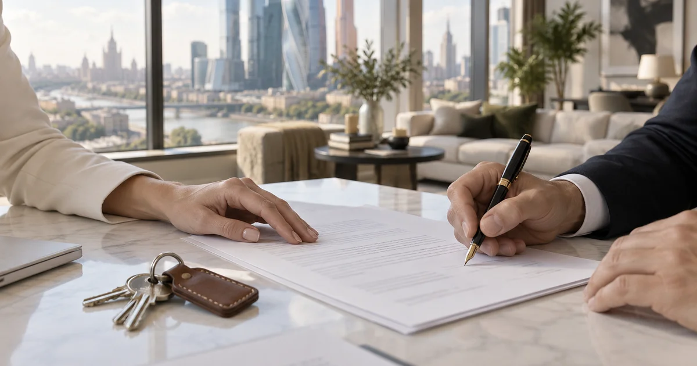

Договор купли-продажи квартиры составляют письменно, подписывают продавец и покупатель, а право собственности переходит после регистрации в Росреестре. По закону в договоре обязательны предмет, цена и список людей, которые сохраняют право пользоваться квартирой. Ниже образец по разделам и то, что я проверяю перед подписанием.
Я двадцать лет проработала в банке и шесть лет помогаю купить и продать жильё. Шаблон из интернета обычно составлен правильно. Проблемы сидят в мелочах: в том, кто прописан, как идут деньги и что написано про передачу ключей. Разберу договор по разделам.
1. Стороны. ФИО, дата рождения, паспортные данные и адрес регистрации продавца и покупателя. Если покупателей двое, указываете вид собственности: совместная для супругов или доли.
2. Предмет договора. Пример формулировки: «Продавец передаёт в собственность Покупателя квартиру с кадастровым номером 77:00:0000000:0000, расположенную по адресу: г. Москва, ул. …, д. …, кв. …, общей площадью 42,5 м², на 7 этаже». Здесь же основание права продавца: договор, свидетельство о наследстве, приватизация.
3. Цена и порядок расчётов. Полная цена квартиры цифрами и прописью, способ оплаты и срок. Пример: «Цена квартиры 12 500 000 рублей. Оплата через аккредитив, открытый Покупателем в банке …, раскрытие после регистрации перехода права».
4. Лица, сохраняющие право пользования. Перечень всех, кто зарегистрирован и останется с правом жить в квартире, либо фраза, что таких лиц нет. Отдельно срок, в который продавец и его семья снимаются с учёта.
5. Передача квартиры. Срок передачи, состояние, ключи и подписание передаточного акта.
6. Гарантии продавца. Квартира не заложена, не арестована, не обещана другим, долгов по коммунальным платежам нет.
7. Расходы и регистрация. Кто платит госпошлину, кто подаёт документы в Росреестр.
8. Подписи сторон.
| Условие | Статья ГК РФ | Что будет без него |
|---|---|---|
| Предмет: данные, по которым квартиру можно однозначно определить | ст. 554 | договор не заключён |
| Цена квартиры | ст. 555 | договор не заключён |
| Лица, сохраняющие право пользования | ст. 558 | договор не заключён |
| Передаточный акт | ст. 556 | спор о моменте передачи |
Во всех остальных случаях договор подписывается в простой письменной форме. Нотариуса можно позвать и по желанию: так сделку сложнее оспорить, но это дороже.
Предварительный договор подписывают, когда до сделки нужно время: продавец собирает документы или покупатель ждёт одобрения ипотеки. В нём те же главные условия, что в основном: квартира, цена и срок, до которого стороны обязаны подписать основной договор. Деньги к нему обычно идут авансом или задатком, разницу я разбирала в статьях Задаток при покупке квартиры и Договор аванса.
Расписка подтверждает, что продавец получил деньги. При расчёте через аккредитив или сервис безопасных расчётов она не обязательна, но многие покупатели всё равно просят её для спокойствия.
Договор купли-продажи доли удостоверяет нотариус, иначе сделку не зарегистрируют.
Подписанный договор подают в Росреестр через МФЦ или электронно через банк и сервисы регистрации. Срок регистрации по закону 7 рабочих дней, через МФЦ 9. Госпошлина за регистрацию права для физлица в 2026 году 4000 ₽, если кадастровая стоимость квартиры не выше 20 млн ₽. Обычно её платит покупатель.
Последний пункт обсуждают чаще всего. Если сделку отменят через суд, покупатель получит назад только ту сумму, что указана в договоре.
Договор в простой письменной форме стороны подписывают сами, а потом подают на регистрацию через МФЦ. МФЦ договор не составляет и юридически не проверяет, он только принимает документы для Росреестра.
Как это выглядит:
Если договор нужно заверить у нотариуса, например при продаже доли, нотариус сам подаёт документы на регистрацию электронно, идти в МФЦ не нужно. Подробнее о нотариальной форме в статье нотариальная сделка купли-продажи квартиры.
Если покупатель берёт ипотеку, договор чаще всего готовит банк по своему шаблону. В нём появляются особые пункты:
Продавцу важно проверить, в какой срок банк раскрывает аккредитив после регистрации и что будет, если регистрацию приостановят. Про этапы такой сделки в статье покупка квартиры в ипотеку пошагово.
Продать или купить квартиру через представителя можно. Доверенность должна быть нотариальной и прямо разрешать продажу или покупку конкретной квартиры, подписание договора, получение денег, если это нужно, и подачу документов на регистрацию.
Что я проверяю в такой сделке:
Сделка по доверенности несёт дополнительный риск для покупателя. Подробно в статье доверенность на продажу квартиры.
Стандартный образец закрывает обязательные пункты. Но живую сделку защищают дополнительные условия:
| Условие | Зачем | Пример формулировки |
|---|---|---|
| Срок снятия с регистрации | Чтобы продавец не тянул с выпиской | «Продавец обязуется сняться с регистрационного учёта до 31.12.2026» |
| Срок освобождения квартиры | Чтобы покупатель знал, когда въедет | «Продавец освобождает квартиру не позднее 10 дней после регистрации перехода права» |
| Штраф за просрочку | Стимул соблюдать сроки | «За каждый день просрочки освобождения Продавец уплачивает 0,1% цены» |
| Что остаётся в квартире | Чтобы не спорить о мебели и технике | «В квартире остаются кухонный гарнитур и встроенная техника по перечню» |
| Отсутствие долгов | Чтобы покупатель не платил чужую коммуналку | «Продавец гарантирует отсутствие задолженности по оплате ЖКУ на дату передачи» |
Конкретные даты и суммы стороны выбирают сами. Главное, чтобы условие было написано однозначно.
До регистрации перехода права стороны могут расторгнуть договор по соглашению и забрать документы из Росреестра. После регистрации расторгнуть договор можно только по соглашению сторон с обратной регистрацией или через суд, если одна сторона существенно нарушила условия. Например, покупатель не заплатил.
Поэтому условия оплаты пишут так, чтобы продавец получил деньги гарантированно, а покупатель не платил до регистрации. Для этого и нужны аккредитив, сервис безопасных расчётов или ячейка. Подробнее в статье аккредитив при покупке квартиры.
Если вы покупаете или продаёте квартиру, я проверю договор, документы продавца и порядок расчётов, посчитаю расходы по сделке и подскажу, где риски. Подбираю и квартиры, если вы ещё в поиске.
Написать можно в мою личку в Telegram: разобрать мою ситуацию. Кнопка откроет чат со мной с готовым сообщением про эту статью, его останется только отправить.
Только в особых случаях: продажа доли, собственник несовершеннолетний или недееспособный. В остальных хватит простой письменной формы.
Описание квартиры с кадастровым номером, цена и список людей, которые сохраняют право пользоваться квартирой после продажи.
Госпошлина за регистрацию права для физлица 4000 ₽, если кадастровая стоимость квартиры не выше 20 млн ₽.
Можно, закон этого не запрещает. Важно проверить документы продавца и прописанных, это защищает сильнее любого шаблона.
После регистрации перехода права в Росреестре. Подпись под договором права собственности ещё не даёт.
Закон его не требует. Он нужен, когда между договорённостью и сделкой проходит время и стороны хотят закрепить цену и срок.
Да. Если не продаётся доля и среди собственников нет детей, договор можно составить в простой письменной форме и подать через МФЦ.
По одному каждой стороне, а для бумажной регистрации обычно ещё один. Уточните требования МФЦ своего города при записи.
Обычно банк покупателя по своему шаблону. Продавцу стоит прочитать пункты об оплате и сроке раскрытия аккредитива.
По соглашению сторон с обратной регистрацией или через суд при существенном нарушении, например при неоплате.
Проверено 24 ноября 2026. Размер госпошлины и сроки регистрации действуют на 2026 год.
Проверить договор перед подписанием: разбор в Telegram.